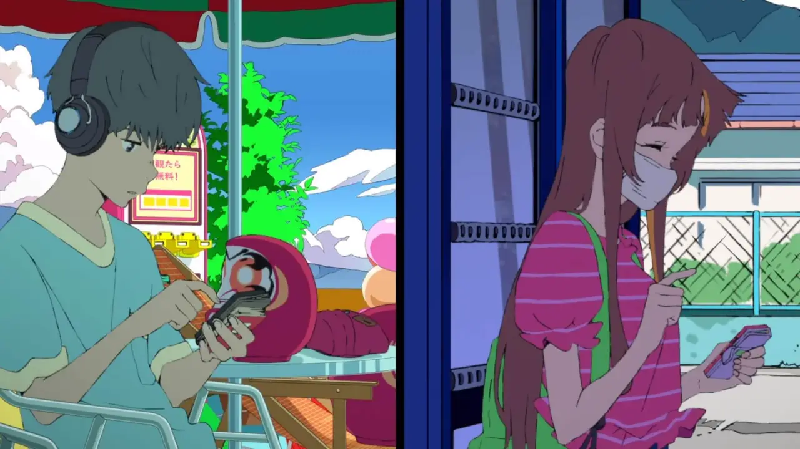
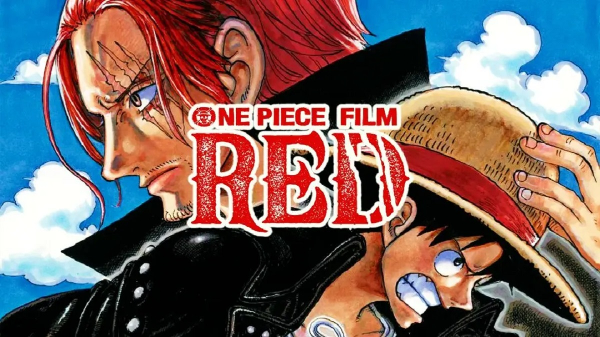
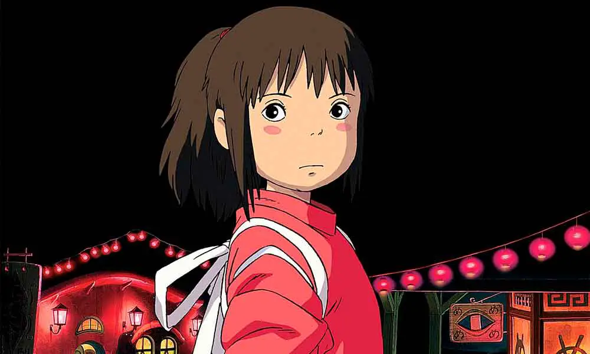

Naruto The Last: Uma Jornada de Amor e Ação no Universo Ninja

Baseado na renomada série de mangá "Naruto" de Masashi Kishimoto,o filme representa um marco
significativo
no universo Naruto, servindo como uma emocionante conclusão para a saga que os fãs acompanharam
durante
anos.
Leia Mais
Palavras que Borbulham como Refrigerantes

Palavras que Borbulham como Refrigerantes transcende as barreiras do gênero,oferecendo uma
experiência cinematográfica que provoca reflexões sobre a maneira como nos comunicamos,entendemos e nos
conectamos uns com os outros.
Leia Mais
A Voz Do Silêncio

Com performances cativantes e uma abordagem narrativa sensível, "A Voz do Silêncio" se consolida
como
uma
obra que ressoa além das telas, instigando conversas sobre inclusão, empatia e a beleza do silêncio
que,
por
vezes, fala mais alto do que qualquer palavra.
Leia Mais
Kuroko No Basket

Kuroko no Basket: The Last Game entrou em cena como um furacão, ampliando os limites do gênero
esportivo e cativando fãs fervorosos com sua intensidade,ação eletrizante e rivalidades calorosas.
Leia Mais
Your Name

Dirigido por Makoto Shinkai, o filme é um testemunho do poder do amor e da conexão humana,envolvendo
os
espectadores com sua mistura única de fantasia e emoção.
Leia Mais
Violet Evergaden
Violet Evergarden: Eternidade e a Boneca de Auto Memórias é uma emocionante exploração da vida, amor
e
redescoberta pessoal,destinada a tocar os corações de espectadores de todas as idades. Leia Mais
One Piece Red

Em "One Piece Red", os elementos que tornaram a franquia tão querida permanecem intactos. Os
personagens
carismáticos e suas relações complexas, as batalhas exuberantes de frutas do diabo e a exploração de
ilhas
fascinantes mantêm os fãs imersos em um mundo onde a aventura está sempre à espreita. Leia Mais
Boruto The Movie

A continuação da icônica saga de Naruto,intitulada "Boruto: A Nova Geração Ninja", trouxe uma
lufada de ar fresco para o mundo dos ninjas e cativou tanto fãs antigos quanto uma nova geração
de espectadores. é uma emocionante aventura que mergulha nas vidas dos filhos dos heróis lendários
de Konoha..
Leia Mais
Boku no Hero: Uma História de Heróis e Superação

O Filme é um emocionante capítulo da popular série de anime e mangá que segue a jornada de Izuku
Midoriya, um jovem sem poderes em um mundo onde a maioria das pessoas possui superpoderes
conhecidos como "Quirks. o filme expande o universo da série, proporcionando uma experiência
emocionante tanto para os fãs de longa data quanto para novos espectadores
Leia Mais
A viagem De Chihiro

A Viagem de Chihiro" é uma história mágica e cativante que segue a jornada de Chihiro Ogino, uma menina de 10 anos que se muda com seus pais para uma nova cidade. No caminho, a família se perde e acaba em um misterioso e aparentemente abandonado parque de diversões. Lá, eles encontram uma variedade de alimentos deliciosos, mas Chihiro desconfia e não come nada.
Leia Mais